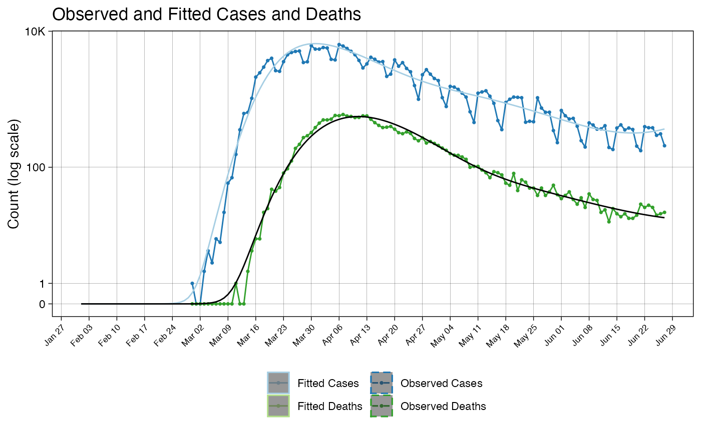
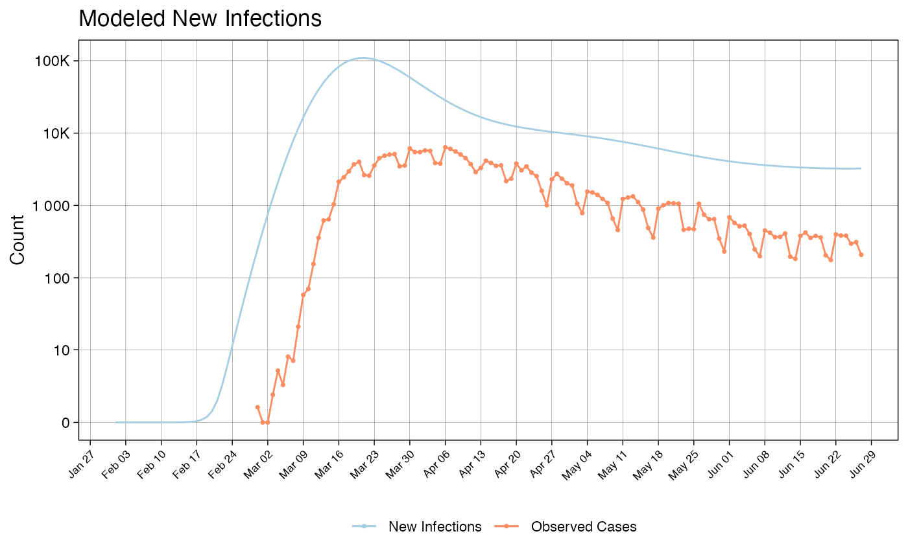

vignettes/covidestim_vignette.Rmd
covidestim_vignette.RmdThis vignette demonstrates running the model on NYC data and viewing the result.
We will demonstrate how to use the covidestim package using data from the early NYC epidemic that the package makes available through the example_nyc_data() function.
Users can use case and/or death data with the model. Each data type should be entered as its own dataframe with two columns: date and observation.
head(example_nyc_data('cases'))
#> # A tibble: 6 x 2
#> date observation
#> <date> <dbl>
#> 1 2020-02-29 1
#> 2 2020-03-01 0
#> 3 2020-03-02 0
#> 4 2020-03-03 2
#> 5 2020-03-04 5
#> 6 2020-03-05 3
head(example_nyc_data('deaths'))
#> # A tibble: 6 x 2
#> date observation
#> <date> <dbl>
#> 1 2020-02-29 0
#> 2 2020-03-01 0
#> 3 2020-03-02 0
#> 4 2020-03-03 0
#> 5 2020-03-04 0
#> 6 2020-03-05 0Input data and model run options are summarized into a covidestim configuration with the function call ?covidestim. Users must specify the number of days of data in the input data. More information on data input can be accessed at ?input_cases and ?input_deaths. Printing the result of covidestim() will produce a summary of model run conditions, priors, and data inputs.
Input data and model configuration options are rolled up into a model configuration object as follows:
cases <- example_nyc_data('cases')
deaths <- example_nyc_data('deaths')
cfg <- covidestim(ndays = nrow(cases), region = 'New York') +
input_cases(cases) +
input_deaths(deaths)
print(cfg)
#> Covidestim Configuration:
#>
#> Seed: 42
#> Chains: 3
#> Iterations: 1500
#> Warmup runs: 1200
#> Priors: Valid
#> ndays: 120
#>
#> Priors:
#>
#> log_new_inf_0_mu 0
#> log_new_inf_0_sd 10
#> logRt_mu 0
#> logRt_sd 3
#> inf_imported_mu 0
#> inf_imported_sd 0.6265664160401
#> deriv1_spl_par_sd 0.5
#> deriv2_spl_par_sd 0.1
#> p_sym_if_inf [alpha] 5.143
#> p_sym_if_inf [beta] 3.536
#> p_sev_if_sym [alpha] 1.8854
#> p_sev_if_sym [beta] 20.002
#> p_die_if_sev [alpha] 28.239
#> p_die_if_sev [beta] 162.3
#> p_die_if_inf [alpha] 15.915
#> p_die_if_inf [beta] 3167.1
#> ifr_decl_OR [alpha] 9.1357
#> ifr_decl_OR [beta] 29.339
#> inf_prg_delay [shape] 3.413
#> inf_prg_delay [rate] 0.6051
#> sym_prg_delay [shape] 1.624
#> sym_prg_delay [rate] 0.2175
#> sev_prg_delay [shape] 2.061
#> sev_prg_delay [rate] 0.2277
#> serial_i [shape] 129.1
#> serial_i [rate] 22.25
#> rr_diag [alpha]sy_vs_sym_a 2
#> rr_diag [alpha]sy_vs_sym [beta] 18
#> rr_diag_sym_vs_sev [alpha] 2
#> rr_diag_sym_vs_sev [beta] 2
#> p_diag_if_sev [alpha] 5
#> p_diag_if_sev [beta] 2
#>
#> Inputs:
#>
#> [ 120] Cases
#> [ 120] DeathsThere are a few possible variations on this:
Custom priors can be set by adding them, just as input_cases() and input_deaths() were added.
A population size can be set, to make the model aware of an upper bound on how many individuals could be infected.
input_cases() and input_deaths() can accept a second parameter, type, to specify if the data is organized by date-of-report, or date-of-event.
If you set custom priors, be sure to check the output of print(cfg) to see that your prior is present in the configuration.
Finally, the model is run with the function ?run.covidestim. Don’t forget to assign the a name to the output of the run - you could lose it!. Runtimes vary depending on the size and quality of the data, and may take over an hour. If you are running the model in an interactive environment like RStudio, periodic status updates will appear in the console. Here, we will use the BFGS algorithm to quickly produce a result, as NUTS, the method used by run(), takes longer.
result <- runOptimizer(cfg)
#> Finished try #1 in 1.6s with exit code 0
#> Finished try #2 in 2.4s with exit code 0
#> Finished try #3 in 1.9s with exit code 0
#> Finished try #4 in 3.1s with exit code 0
#> Finished try #5 in 2.3s with exit code 0
#> Finished try #6 in 1.9s with exit code 0
#> Finished try #7 in 1.7s with exit code 0
#> Finished try #8 in 1.9s with exit code 0
#> Finished try #9 in 2.8s with exit code 0
#> Finished try #10 in 1.7s with exit code 0Typically, BFGS will occasionally fail to converge. This is what causes the non-zero return codes. runOptimizer.covidestim() will automatically exclude these, and select the BFGS run that maximizes the posterior.
Calling run() or runOptimizer() on a valid covidestim configuration will produce an S3 object of class covidestim_result. Here, we describe the summary functions in covidestim to view model results. In the vignette vignette("results"), we describe the various objects within covidestim_result. However, most users will likely find that the summary.covidestim_result() function provides all the information they need.
A covidestim object can be easily converted to a summary data frame with the ?summary.covidestim_result function. Each row of the data frame is a date. Each column of the data frame is a value of interest. Variables appened with .hi or .lo indicate the 0.975 and 0.025 quantiles, respectively.
result.summary <- summary(result)
print(result.summary[40:45, 1:5])
#> # A tibble: 6 x 5
#> date cases.fitted cases.fitted.hi cases.fitted.lo cum.incidence
#> <date> <dbl> <lgl> <lgl> <dbl>
#> 1 2020-03-11 192. NA NA 162890.
#> 2 2020-03-12 291. NA NA 226912.
#> 3 2020-03-13 427. NA NA 307625.
#> 4 2020-03-14 608. NA NA 406064.
#> 5 2020-03-15 842. NA NA 522268.
#> 6 2020-03-16 1134. NA NA 655150.Model results can be visualized with ?viz. Two figures will be produced.
plots <- viz(result)The figure ‘observedVsFitted’ plots the observed cases and deaths (the input data) against the modeled values for reported cases and deaths. Because runOptimzier.covidestim_result() does not have CI’s, there will be a warning relating to the NA-valued CI columns that are present in the output.
plots$observedVsFitted
#> Warning in max(ids, na.rm = TRUE): no non-missing arguments to max; returning -
#> Inf
#> Warning in max(ids, na.rm = TRUE): no non-missing arguments to max; returning -
#> Inf
The figure ‘infectionsAndCases’ plots modeled reported cases against modeled ‘true’ new infections. The latter is what we estimate to be the complete, un-lagged time series of incident infections that would give rise to the trends we observe in the case and death data.
plots$infectionsAndCases
#> Warning in max(ids, na.rm = TRUE): no non-missing arguments to max; returning -
#> Inf